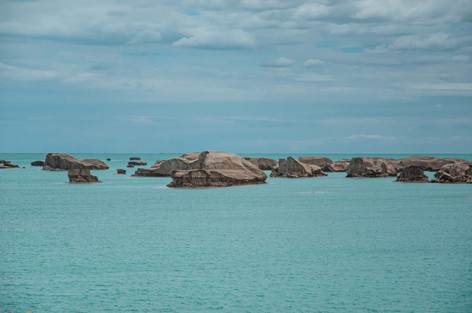

茶卡盐湖
中国的天空之镜
- 
鼠标放上展示图片
-
游客数量逐年增长，被国家旅游地理杂志评为“人一生要去的55个地方”之一
近年来以其生产、旅游两相宜而在国际国内旅游界及青藏高原风光游中享有较高美誉
茶卡盐湖还因盛产大青盐驰名，成为中国首家绿色食用盐生产基地
成为大美青海的又一张靓丽金名片。
茶卡盐湖夹在祁连山支脉完颜通布山和昆仑山支脉旺尕秀山之间
两山常年积雪，雪山倒影在湖面，形成水天相交、盐湖与雪峰交相辉映的青藏高原独特自然风光
更多资料
the more
-
茶卡盐湖，位于青海省海西蒙古族藏族州乌兰县茶卡镇
“茶卡”是藏语，意即盐池，蒙古语“达布逊淖尔”,也就是青盐的海。
茶卡盐湖四周雪山环绕，平静的湖面像镜子一样，反射着美丽的令人陶醉的天空景色，被誉为“中国的天空之镜”
茶卡盐湖一年 四季美景连连，春日里低悬于天际的白云落在湖水里，分不清是盐更白还是云更白
夏季碧波荡漾的湖水翡翠一般绿的沁人心扉
秋天干涸的湖面冰清玉洁，平坦无垠；冬天的苍凉荒芜更具挑战。
当然，我国的盐湖风景还有很多。
中国四大盐湖分别为：茶卡盐湖，察尔汗盐湖，运城盐湖，巴里坤盐湖
茶卡盐湖与塔尔寺、青海湖、孟达天池齐名，是“青海四大景”之一
察尔汗盐湖，为中国矿业基地之一，有著名的万丈盐桥之称
运城盐湖是世界三大硫酸钠型内陆盐湖之一，被誉为“中国死海”
巴里坤盐湖，山峦起伏，水草丰美，湖中碧波荡漾